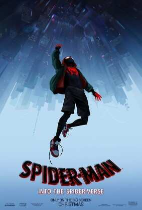

Spiderman: Un nuevo Universo
La primera película de la saga, que nos introduce al multiverso y a Miles Morales como el nuevo Spider-Man.
Miles Morales es un adolescente de 15 años que se convierte en el nuevo Spider-Man después de ser mordido por un arácnido genéticamente modificado. Y poco después, pierde a su Peter Parker en un accidente provocado por Kingpin y su supercolisionador. Cuando el aparato de Kingpin se activa, Miles se encuentra con otros Spider-People de diferentes dimensiones, incluyendo a Peter B. Parker, Gwen Stacy (Spider-Woman), Spider-Man Noir, Peni Parker y Spider-Ham. Juntos deben detener a Kingpin y salvar el multiverso.
"Cualquiera puede usar la máscara." - Spider-Man: Un nuevo universo (2018)